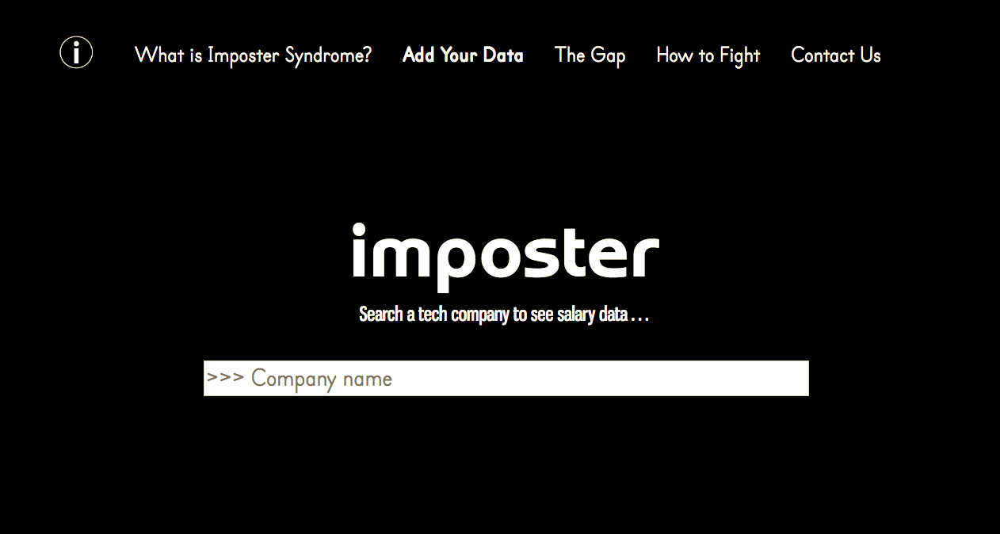

Here are some of my past hacks and projects:
Shapes Animator

This was a school project that used an MVC & decorator pattern to animate using SVG. I had a lot of fun thinking through the best design patterns to use and this was the first project where all of my previous courses came together, so it was incredibly rewarding to develop.
Imposter

I wrote and designed this website as part of my first hackathon! I've never felt more "normal" in a space than at SheHacks Boston; it was a wonderful environment to tackle a coding challenge focused on the gender wage gap.
Secure Password Generator
This was a really fun school project that I was assigned in one of my favorite classes to date, Foundations of Cybersecurity. I had just finished up my first coding class ever, and used the functional programming language we were taught in it to code my first unstructured-coding assignment ever. I also jumped head-first into bash! It remains one of my proudest projects, completed mere months after learning to code for the first time, and for a cause I now deeply care about -- cybersecurity!